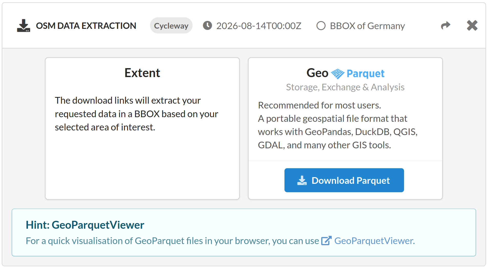

History Statistics
Discover how OpenStreetMap data evolves over time.
Explore how many buildings have been mapped or how the length of cycleways has grown in your region.
Compare different areas, track mapping activity, and gain insights into how the community’s tagging practices change over time.
Explore how many buildings have been mapped or how the length of cycleways has grown in your region.
Compare different areas, track mapping activity, and gain insights into how the community’s tagging practices change over time.

Quality Analyses
Assess the quality of OpenStreetMap data.
Check out how complete, accurate and up-to-date OSM is for your region of interest.
Gain confidence in OSM and find out if relevant features and attributes have been mapped. And finally answer the question: Is OSM data fit for my purpose?
Check out how complete, accurate and up-to-date OSM is for your region of interest.
Gain confidence in OSM and find out if relevant features and attributes have been mapped. And finally answer the question: Is OSM data fit for my purpose?

Data Extraction
Extract custom filtered OpenStreetMap data for your area-of-interest, ready to be used for in-depth analysis in your own workflows.
Find further options to get OSM History Data for your application in our
ohsome API Swagger documentation.
Find further options to get OSM History Data for your application in our
ohsome API Swagger documentation.

Available topics and indicators: